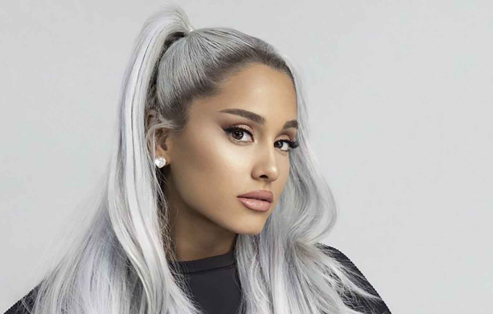
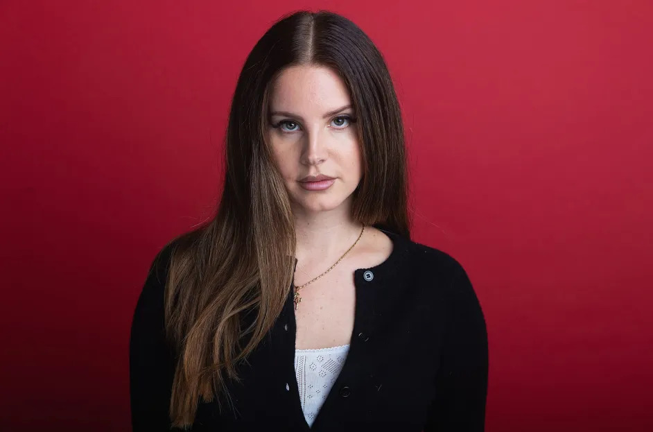
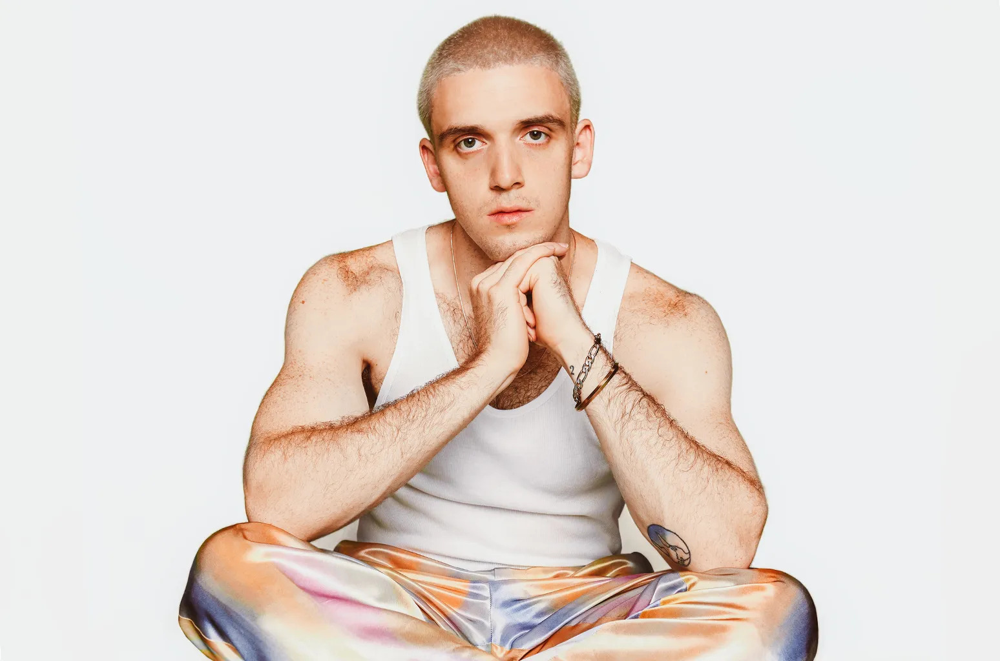

Lineup 2024

Ariana Grande
With her four-octave vocal acrobatics and iconic image, American singer, songwriter, and actress Ariana Grande solidified her place as one of the quintessential pop stars of her generation, racking up stacks of awards and chart records in the process.
pov
Billie Eilish
Billie Eilish made history as the youngest artist to receive nominations and win in all the major categories at the 62nd GRAMMY® Awards, receiving an award for Best New Artist, Album of the Year, Record of the Year, Song of the Year, and Best Pop Vocal Album.

Lana Del Rey
Lana Del Rey is one part songwriting superpower, one part constructed character, building a Southern California dream world of manufactured melancholy and genuine glamour in her stylized, meticulously arranged noir-pop songs and becoming an incredibly influential indie superstar in the process.
Olivia Rodrigo
After shattering records with her chart-topping, 4x Platinum debut album SOUR – the fastest album in history to have all of its songs certified RIAA Platinum or higher – Olivia Rodrigo makes a monumental return with her new album GUTS, revealing newly heightened sophistication as a vocalist and lyricist.

Lauv
For as much as he’s known for intriguing and inventive soundscapes, multi-Platinum chart-topping singer, songwriter, producer, and multi-instrumentalist Lauv asserts himself as a storyteller, first and foremost. His stories continue to enchant audiences everywhere by converting the magic around him into generational anthems. After introducing himself with viral sensation “The Other” he landed a global smash in the form of “I Like Me Better.”
Ali Gatie
A 26 - year-old artist from a suburb of Toronto (Mississauga), everything you need to know about Ali is expressed through his music, furthered through his brand LISN (“listen”). All about the music is something Ali will always be, and his only hope is that you take the time to LISN..